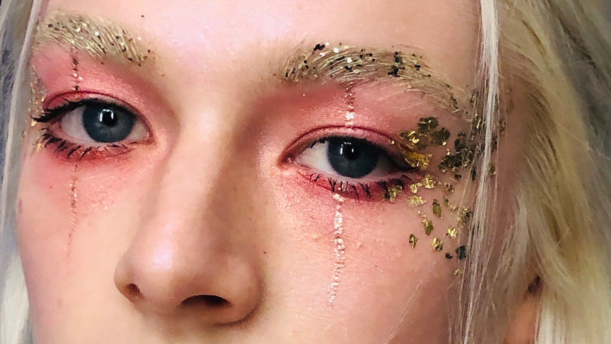
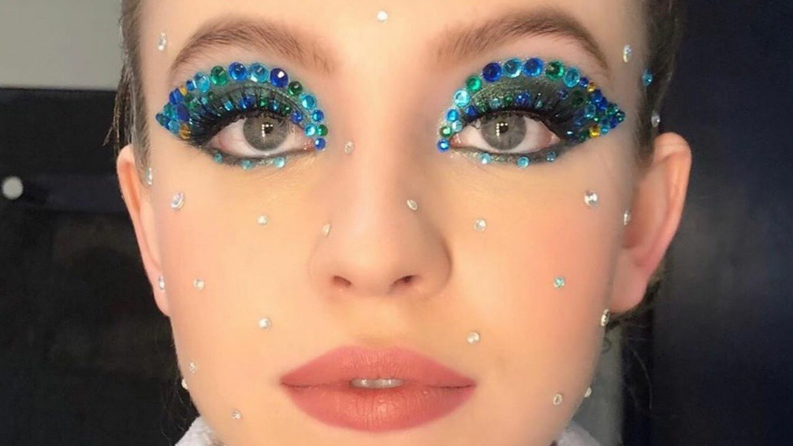
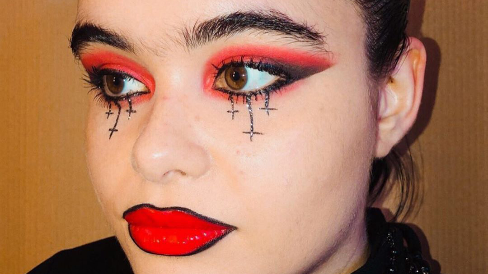
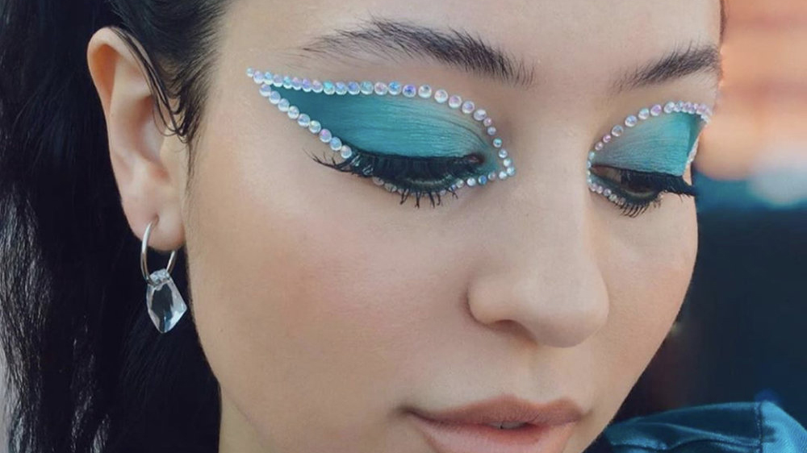
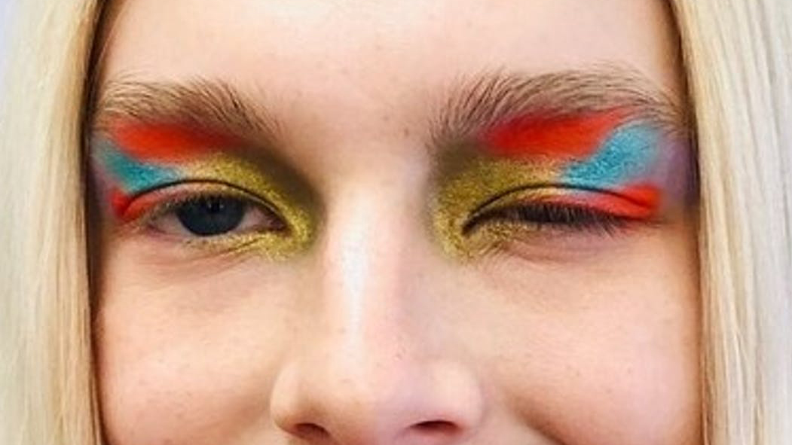
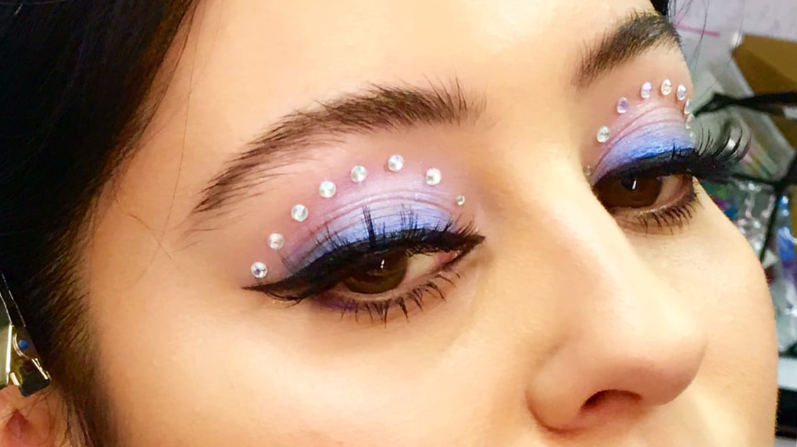
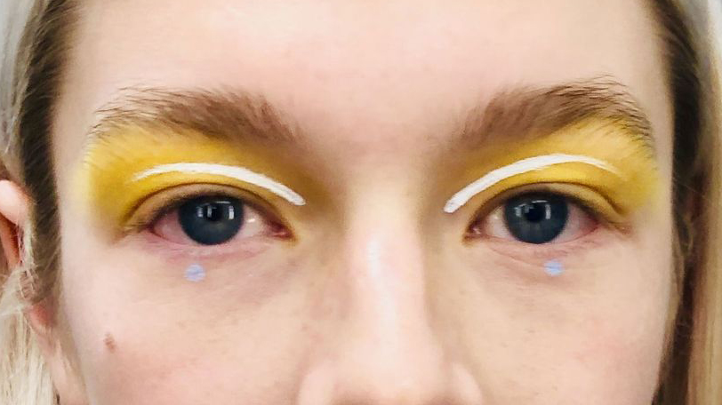
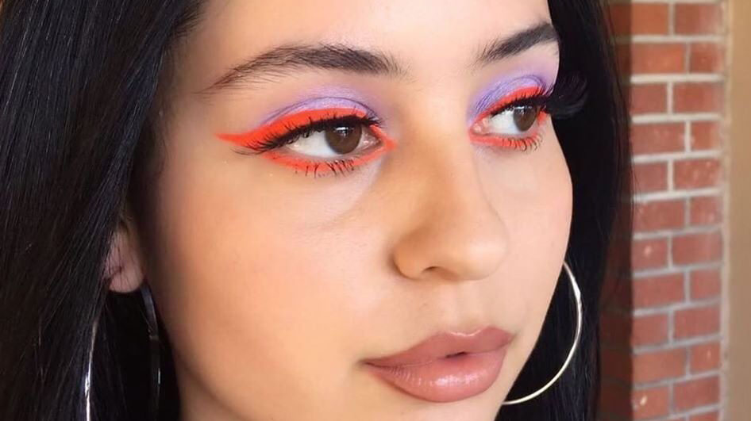

Hunter Schafer's pink and gold look. Makeup by Doniella Davy.

Sydney Sweeney's blue look. Makeup by Doniella Davy.

Barbie Ferreira's red and black halloween look. Makeup by Doniella Davy.

Alexa Demie's blue rinestone look. Makeup by Doniella Davy.

Hunter Schafer's wild colorful look. Makeup by Doniella Davy.

Alexa Demie's purple rinestone look. Makeup by Doniella Davy.

Hunter Schafer's simple yellow and white look. Makeup by Doniella Davy.

Alexa Demie's bold purple and neon orange look. Makeup by Doniella Davy.
The Makeup of 'Euphoria'
Click below to navigate Euphoria's creative makeup looks from season 1